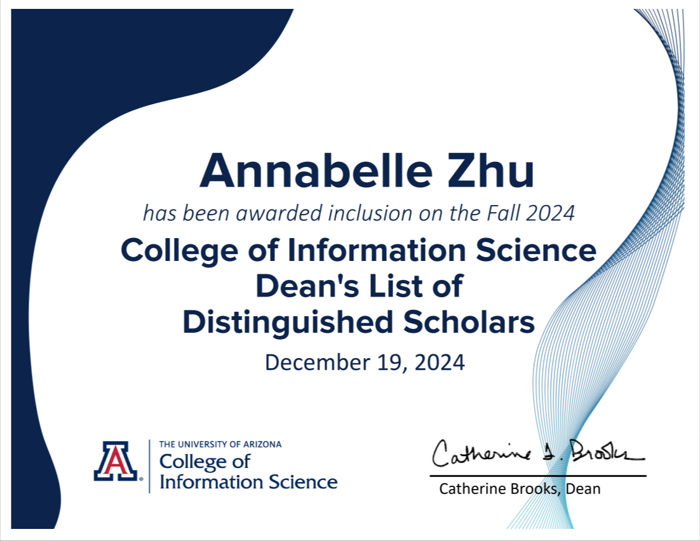

About
Hello, I'm Annabelle Zhu — a data-driven creator passionate about turning complex ideas into impactful digital experiences. With a strong foundation in data science, web development, and UX/UI design, I blend technical precision with creative thinking, holding a Master degree in Data Science. I am dedicated to further enhancing my technical expertise and analytical skills. Known for my effective leadership style, critical thinking abilities, and strong sense of teamwork, I bring a proactive approach to problem-solving and am committed to delivering excellence in every project. I’m passionate about exploring new opportunities and collaborating with like-minded professionals to drive meaningful contributions in data science and beyond.
Personal Info
- Birthday: 26 July 2001
- City: Shanghai, China
- Phone: +86 176-2180-0415
- Age: 24
- Degree: BA
- Email: 0realannabelle0@gmail.com
- Work Type: Remote
Data Analyst & UX/UI Designer | Transforming Data and Design into Impact
I’m a data-driven creator with a passion for turning information into insights and interfaces into experiences. With a strong background in programming, data analysis, and UX/UI design, I specialize in leveraging tools like Python, R, SQL, Tableau, and Adobe XD to interpret complex data, design intuitive solutions, and build engaging digital products.
Currently pursuing my Master’s in Data Science, I bring together technical expertise and creative thinking to solve real-world problems. I’m known for my clear communication, collaborative spirit, and relentless curiosity — always eager to learn, lead, and contribute meaningfully to every project I take on.
Skills
Resume
I am a detail-oriented data analyst with a strong academic background in UA. I am committed to leveraging my analytical skills and knowledge to drive data-driven decision-making and contribute meaningfully to business success.
Summary
Annabelle Zhu
A diligent graduate student in Data Science, seeking an opportunity to apply my robust technical skills and knowledge in a dynamic work environment. Proficient in web development and design, and well-versed in advanced statistical methodologies and data visualization. I bring a proven ability to perform efficient data analysis using various software applications. An autonomous, motivated professional with excellent communication, interpersonal, and time management skills. Committed to contributing individually and collaborating effectively in a team setup.
Education
University of Arizona
Jan 2025 - Dec 2025
Master of Science - MS, Data Science
GPA: 3.75/4
University of Arizona
Aug 2022 - Dec 2024
Bachelor of Arts - BA, Information Science & eSociety
Minors: Math, Thematic
GPA: 3.92/4
Eynesbury Institute of Business and Technology
Diploma, Computing and Information Technology
Jun 2021 - Jan 2022
Grade: 6.25/7
Songjiang No.2 High School
High School
Sep 2017 - Jan 2019
Languages
English
Expert
Mandarin
Native
Soft Skills
Effective Communication
Team Collaboration
Time Management
Intercultural Communication
Emotional Intelligence
Experience
Xindao Software (Jiangsu) Co., Ltd 01/2024 - Present
Freelance UI/UX & Brand Designer
- Designed a professional logo and visual brand identity aligning with corporate values and modern aesthetics. using Illustrator.
- Created interactive prototypes and UI components using Adobe XD, showcasing product structures and process visualization of MES system.
Cooledtured Collections 07/2024 - 09/2924
Data Research Analyst
- Collected, cleaned, and organized data to ensure accuracy
- Conducted data analysis and created visualizations to generate insightful reports
- Contributed to the development and improvement of data-driven processes by staying updated on industry trends and best practices
- Communicated data-driven recommendations based on an understanding of metrics and business goals
The Global Tech 01/2024 - 05/2024
Data Analyst Trainee
- Utilized SQL to extract and analyze data, presenting findings through interactive visualizations in Tableau and producing comprehensive reports for internal stakeholders
- Gained insights into global business strategy by using data techniques such as exploratory data analysis, summary statistics, and visualization.
- Conducted data analysis and visualization of website data for grammy.com (by the Recording Academy)
- Communicated data-driven recommendations based on an understanding of metrics and business goals
The Global Tech 06/2023 - 12/2023
Web Developer Trainee
- Reviewed quantitative and qualitative user research and identified themes inform future product development.
- Created interactive prototypes of Marriott Bonvoy Hotels and Villas and Sprinkles Cupcakes
- Developed and maintained a comprehensive portfolio showcasing web development projects, including interactive prototypes, third-party API integrations, and creative marketing strategies
Shanghai Longmai Industrial Co., Ltd 06/2023 - 12/2023
Data Analyst
- Collected, cleaned, and analyzed multi-channel sales and customer data to identify key patterns and trends, supporting strategic decision-making.
- Developed interactive dashboards in Excel and Power BI to monitor KPIs, uncovering a 12% revenue growth opportunity.
- Conducted A/B testing and campaign performance analysis, recommending optimizations that improved marketing ROI by 20%.
- Automated weekly reporting using Python (pandas, matplotlib) and SQL, reducing reporting time by 40%.
Honors & Awards
Summa Cum Laude
Dec 20, 2024
Issued by University of Arizona
To be eligible for Latin Honors at graduation, bachelor's degree candidates must have completed at least 45 graded units of University Credit with letter grades that carry the required grade-point-average of 3.9-4.0
Dean's List of Distinguished Scholars
Dec 19, 2024

Issued by University of Arizona
Dean’s List recognition is awarded based on 12 units and a 4.000 grade-point-average
Academic Year Highest Academic Distinction
May 09, 2024
Issued by University of Arizona
Academic Year Highest Academic Distinction recognition is awarded a 4.000 grade point average
Dean's List with Distinction - Full Time
May 09, 2024
Issued by University of Arizona
Dean’s List recognition is awarded based on 12 units and a 4.000 grade-point-average
Dean's List With Distinction
Dec 14, 2023
Issued by University of Arizona
Dean's List with Distinction -- is based on 15 units and a 4.000 grade-point-average.
Honorable Mention
Nov 05, 2023
Issued by University of Arizona
Honorable Mention -- is based on 12 units of 3.500 and above grade-point-average
Licenses & Certifications
Data Science & Visualization Undergraduate Certificate
2024
Issued by University of Arizona
The Data Science and Visualization Certificate provides undergraduate students need in data collection, exploration, manipulation and storage, analysis and presentation in order to navigate data-rich workplace environments.
University of Arizona - Coding for Data Track
2024

The recipient of this certificate has demonstrated skills in data analysis by completing professional-level projects using SQL and Python.
Intel Project - Data Analysis for Sustainability
2024

Certificate recipient has successfully completed a real Data Analysis project for Intel’s Sustainability team.
Intercultural Skills
2023
Badge recipient has demonstrated intercultural skills and the ability to interact effectively and appropriately with diverse team members in an online environment.
Website Portfolio
With a strong portfolio of diverse projects that showcase my proficiency in the fields of web development, Research and Development as well as Innovation . These projects highlight my expertise in various technologies and methodologies, underscoring my ability to tackle complex challenges effectively.

Sprinkles Cupcakes

Discover Your Dream Getaway: Marriott Bonvoy Hotels and Villas
Love Across Mythologies—— Exploring Eternal Bonds in Classical Tales
UX/UI Portfolio
This UX/UI project showcases my ability to design intuitive and efficient enterprise-level systems using Adobe XD. I designed a comprehensive management platform that includes modules for sales, production, technical support, inventory, quality control, and cost accounting. The interface emphasizes usability and clarity, featuring logical navigation, visually distinct icons, and scalable interaction patterns. This project demonstrates my strength in user-centered design, system architecture planning, and visual communication—bridging data, function, and form for real-world business needs.

Data Science Projects
Event-driven Anomaly Detection for AtHub (603881.SH)
Tools: Python | pandas | ta | scikit-learn | LightGBM | SHAP | Quarto | Plotly
This project develops an interpretable machine-learning pipeline to detect and forecast short-term volatility anomalies in AtHub (603881.SH) using 375 days of OHLCV data and 30+ technical indicators. Highlights include:
- Event-driven labeling — anomalies defined by price (±3/5/7%) and volume (1.8×/2.0×/2.5×) thresholds.
- Multi-horizon forecasting — models predicting anomalies 1–3 days ahead with time-series CV.
- Threshold sensitivity analysis — heatmaps comparing Recall / Precision / F1 across 9 threshold combos.
- Model interpretability — SHAP analysis reveals top predictive signals (e.g., RSI × Volume interaction).
- Practical guidance — Active traders benefit from stricter thresholds for high-confidence entries, while risk managers can use more sensitive settings for broader monitoring.
Data Visualization Portfolio: Public Sector Analytics
Tools: R | ggplot2 | networkD3 | Sankey Diagrams | Plotly
A collection of advanced visualizations transforming complex public datasets into actionable insights:
- Occupational Safety Analysis — Interactive Sankey diagram revealing causal relationships between industries and fatality types (BLS data)
- International Trade Patterns — Animated time-series of Japan's industrial diamond imports/exports (1990-2020)
- Environmental Risk Mapping — Geospatial visualization of sewage spill frequency across NY watersheds
- Comparative Trend Analysis — Small multiples showing decade-long workplace safety improvements vs. precious metals trade volumes
Predictive Analysis of Secondary Education Outcomes
Tools: R | caret | glmnet | SHAP | ggplot2
Machine learning approach to identify at-risk students using demographic and behavioral factors:
- Feature Importance Analysis — Quantified parental education impact (2.3× more significant than study time)
- Model Comparison — Achieved 82% recall with Lasso regression (vs 76% with Random Forest)
- Intervention Simulation — Projected 11-15% grade improvement from targeted tutoring programs
- SHAP Value Interpretation — Revealed nonlinear relationships between family size and math performance
Financial Distress Prediction: Taiwanese Corporations
Tools: R | tidymodels | DALEX | ggplot2 | recipes
Bankruptcy risk assessment using 10 years of corporate financial data:
- Feature Engineering — Created 12 financial ratios with 89% correlation to bankruptcy events
- Model Benchmarking — XGBoost outperformed logistic regression by 18% in precision-recall AUC
- Threshold Optimization — Balanced F1-score at 0.83 with 6:1 cost ratio for Type I/II errors
- Explainable AI — Local interpretability revealed critical thresholds for debt-to-equity ratios
Market Intelligence: Pop Culture Merchandising
Tools: Python | scikit-learn | Matplotlib | Seaborn | Feature-engine
Data-driven strategy for anime/movie merchandise optimization:
- Sentiment-Value Correlation — Identified 0.68 Spearman correlation between IMDB ratings and merchandise sell-through
- Cluster Analysis — Segmented 12,000 titles into 5 strategic groups based on popularity decay patterns
- Inventory Optimization — Proposed 30% reduction in slow-moving SKUs with minimal revenue impact
- Release Timing — Quantified 22% premium for merchandise launched within 2 weeks of content release
Price Optimization: Collectible Figures Market
Tools: Python | LightGBM | Optuna | SHAP | Streamlit
Predictive modeling for collectible merchandise pricing strategy:
- Feature Selection — Isolated review sentiment (ρ=0.72) and availability (ρ=-0.64) as primary price drivers
- Hyperparameter Tuning — Achieved MAE of $8.24 (14% better than baseline)
- Price Elasticity — Identified $25-$35 as optimal price band for maximum conversion
- Interactive Tool — Developed browser-based pricing simulator with scenario testing
Digital Audience Analysis: Grammy Awards
Tools: Python | Pandas | Altair | Google Analytics API
Web analytics insights for music industry's premier event:
- Traffic Decomposition — Isolated 314% award-day surge from social media referrals Content Engagement — Identified 3.2× longer dwell time on performer profiles vs. nominee lists
- Geospatial Patterns — Mapped unexpected European engagement peaks during US primetime
- Predictive Modeling — Forecasted within 12% accuracy for 2023 traffic using ARIMA
Customer Segmentation: Starbucks Transaction Analysis
Tools: Python | RFM | K-Means | Tableau | Cohort Analysis
Behavioral segmentation for targeted marketing campaigns:
- RFM Quantization — Classified 85K customers into 7 value-based segments
- Churn Prediction — Identified 22% of high-value customers at risk with 89% precision
- Promotion Simulation — Projected 14% revenue lift from personalized reactivation offers
- Dashboard Development — Interactive Tableau viz for real-time segment performance tracking
Energy Infrastructure Analysis: Sustainable Data Center Siting
Tools: SQL | Tableau | GIS | Cost-Benefit Analysis
Strategic location analysis for green data center deployment:
- Renewable Capacity Mapping — Evaluated 48 states on 12 sustainability metrics
- Cost Modeling — Projected 22-year TCO with sensitivity analysis for energy price volatility
- Policy Alignment — Matched incentive programs to potential savings of $3.2M annually
- Scenario Planning — Compared hybrid vs. full-renewable configurations
Socioeconomic Analysis: Cognitive Capital & Development
Tools: R | Structural Equation Modeling | Spatial Autocorrelation
Cross-national study of human capital indicators:
- Controlled Analysis — Isolated 0.42 partial correlation between IQ and GDP after education adjustment
- Regional Patterns — Identified significant spatial autocorrelation (Moran's I = 0.67)
- Policy Simulation — Projected 7-11% GDP impact from targeted early childhood interventions
- Data Quality Framework — Developed reliability scoring for cross-national composite metrics
Contact
Feel free to reach out to me to discuss collaboration, career opportunities, or any inquiries. You can contact me at my Email for written communication or connect with me my social medias . I'm always eager to engage in meaningful conversations and explore new opportunities in the tech industry.